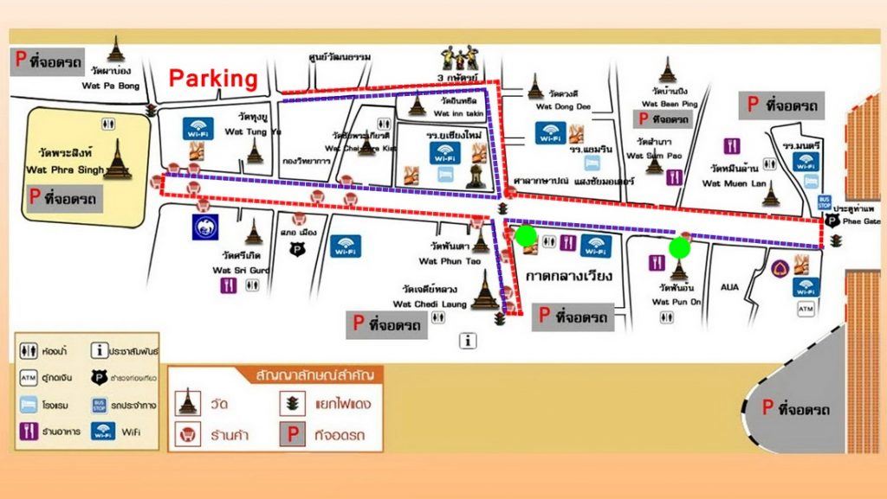
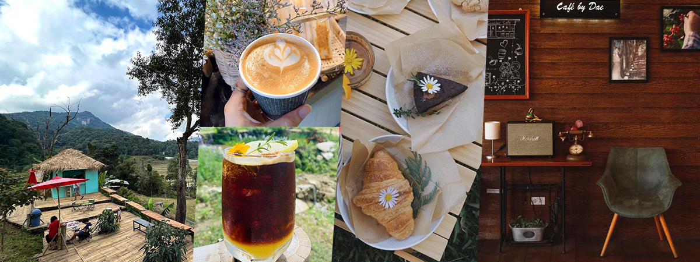

ถนนคนเดินท่าแพตั้งอยู่บนถนนท่าแพ ในเขตเมืองเก่าเชียงใหม่ เริ่มต้นจากประตูท่าแพไปจนถึงบริเวณวัดศรีสุพรรณ อำเภอเมืองเชียงใหม่ อยู่ใจกลางเมือง เดินทางสะดวกด้วยรถสองแถวสีแดง แท็กซี่ หรือเดินเท้าจากที่พักในเขตเมืองเก่า เปิดเฉพาะวันอาทิตย์ตั้งแต่ช่วงบ่ายจนถึงดึก โดยจะมีการปิดถนนตลอดเส้นเพื่อให้คนเดินเลือกซื้อของได้อย่างเต็มที่

🖼️แผนที่ถนนคนเดินท่าแพถนนคนเดินท่าแพ หรือที่คนท้องถิ่นเรียกว่า "ตลาดวันอาทิตย์" เป็นหนึ่งในตลาดเดินเล่นที่มีชื่อเสียงที่สุดของเชียงใหม่ เปิดให้บริการทุกวันอาทิตย์ ทอดยาวตลอดถนนท่าแพไปจนถึงถนนราชดำเนินในเขตเมืองเก่า มีร้านค้ากว่าพันร้านวางขายตลอดสองฝั่งถนน ตั้งแต่งานหัตถกรรมพื้นเมือง ผ้าทอ เครื่องเงิน ภาพวาด ไปจนถึงของที่ระลึกร่วมสมัย
นอกจากการช็อปปิ้งแล้ว บรรยากาศของตลาดยังเต็มไปด้วยการแสดงดนตรีสด การแสดงศิลปะพื้นบ้าน และนักดนตรีเล่นเพลงตามจุดต่าง ๆ ตลอดเส้นทาง ทำให้การเดินชมตลาดกลายเป็นประสบการณ์ทางวัฒนธรรมมากกว่าการจับจ่ายซื้อของทั่วไป ช่วงเย็นที่แสงไฟเริ่มเปิดจะยิ่งเพิ่มความคึกคักให้กับพื้นที่
 🖼️รูปร้านงานฝีมือบนถนนคนเดิน
🖼️รูปร้านงานฝีมือบนถนนคนเดิน

🖼️รูปนักดนตรีเล่นสดบนถนนคนเดินถนนคนเดินท่าแพเปิดเฉพาะวันอาทิตย์ ตั้งแต่ประมาณ 16:00 น. จนถึง 23:00 น. ไม่มีค่าธรรมเนียมเข้าชม เป็นการเดินเลือกซื้อสินค้าและชิมอาหารตามที่ต้องการ ควรเตรียมเงินสดสำรองเนื่องจากร้านค้าส่วนใหญ่ไม่รับบัตร